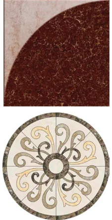

- Fill in the blanks:
- The ratio between the circumference and diameter of any circle is _______.
- A line segment which joins any two points on a circle is a ___________.
- The longest chord of a circle is __________.
- The radius of a circle of diameter 24 cm is _______.
- A part of circumference of a circle is called as _______.
- Match the following:
- Area of a circle - (a) \(\frac{1}{4}\) pr
- Circumference of a circle - (b) (p \(+ 2)r\)
- Area of the sector of a circle - (c) pr
- Circumference of a semicircle - (d) 2p r
- Area of a quadrant of a circle - (e) \(\frac{θ ^{\circ} }{360} ^{\circ} \times \pi r\)
- Find the central angle of the shaded sectors (each circle is divided into equal sectors).

- For the sectors with given measures, find the length of the arc, area and perimeter.
( \(\pi =3.14)\)
- central angle \(45 ^{\circ}\) , \(r = 16\) cm (ii) central angle \(120 ^{\circ}\) , \(d =12.6\) cm
- From the measures given below, find the area of the sectors.
- length of the arc \(= 48 m\), \(r = 10 m\) (ii) length of the arc \(= 50\) cm, \(r = 13.5\) cm
- Find the central angle of each of the sectors whose measures are given below. p \(= \frac{22}{7}\)
- area \(= 462\) cm , \(r = 21\) cm (ii) length of the arc \(= 44 m\), \(r = 35 m\)
- A circle of radius 120 m is divided into 8 equal sectors. Find the length of the arc of each of the sectors.
- A circle of radius 70 cm is divided into 5 equal sectors. Find the area of each of the
sectors.

- Dhamu fixes a square tile of 30 cm on the floor. The tile has a sector
design on it as shown in the figure. Find the area of the sector.
(p \(= 3 14\). ).
- A circle is formed with 8 equal granite stones as shown in the
figure each of radius 56 cm and whose central angle is \(45 ^{\circ}\) . Find the area of each of the granite stones. p \(= \frac{22}{7}\)